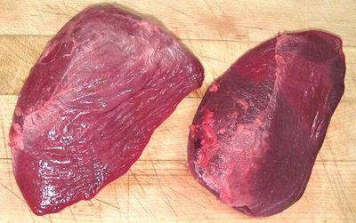

Lamb Spleen / Goat Spleen

[Lamb Melts (markets); Tilli (Hindi); Manneral, Suvarotti (Tamil)]
These are usually labeled "Lamb Melts" in the markets to avoid the
rather anatomical "Spleen". It is most used in North African cooking,
but also anywhere sheep and goat are featured meats. The larger of the
two photo specimens of was 6-1/2 inches long, 4 inches wide and 1 inch
thick, weighing 5-1/2 ounces. The smaller in the photo shows the flat
back side.
Goat Spleen, popular in India, is pretty much identical in
appearance and cooking properties, but not much available in
North America.
More on Lamb Innards.
Spleens are most commonly combined with kidneys, livers, lungs and
other sheep innards in recipes, but in Morocco they are often split open
and stuffed. In flavor it's similar to liver but milder, but its texture
is is chewy rather than soft and crumbly like liver.
Buying:
These can be found labled "Lamb Melts" in markets
serving Turkish, Armenian, Middle Eastern and North African, and any other
communites that are big on sheep and goat.
Prep:
Some recipes call for peeling away the skin and
tendons, but spleens sold in markets here are cleaned and ready to go.
Their may be a small amount of fat to cut away. There is an outer
membrane, which is a little annoying, but removing it is rather difficult
to do. Because of the soft texture, it is best to place the spleens
into the freezer compartment until stiff to make them easier to slice
evenly. T can take 1-1/2 hours or more.
Cooking:
Like Squid. Spleen must be cooked a very shorth
time, or a rather long time. For stir frying, cut fairly thin and fry
the minimum time to cook through, less than 10 minutes. If wet cooked,
at 10 minutes they have the texture of a very soft, springy rubber and
cannot be chewed. At 1-1/4 hour they're still a little chewy, but quite
edible.
Recipes:
If you search for recipes on the Internet, search
for "Lamb Spleen". "Lamb Melts" will get you only hundreds of descriptions
of dishes where "the lamb melts in your mouth" and no recipes for spleen.
Health & Nutrition:
Spleens are very
high in dietary iron and promote red blood cells, but is a problem
for a few poeple who have a condition called hemochromatosis.
as_spleenz 091011 - www.clovegarden.com
©Andrew Grygus - agryg@clovegarden.com - Photos
on this page not otherwise credited © cg1
- Linking to and non-commercial use of this page permitted